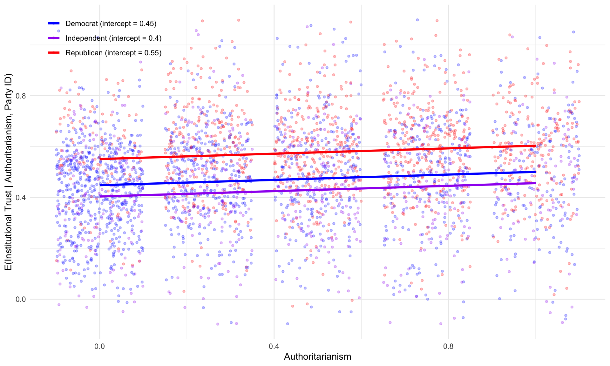

6 Model Fit, Uncertainty, and Inference
6.1 Model Fit and Prediction
This chapter focuses on inference. What can we learn about the the population regression function from the sample regression function? How do we make inferences about the population parameters?
The dashboard below includes several features: - The left-hand panel allows you to adjust the parameters of the data generating process (DGP) – the intercept, slope, error variance, and sample size.
If you choose to run
monte carlo simulationsthe dashboard will simulate datasets from the specified DGP, estimate the OLS coefficients, and then display the distributions.The dashboard
tabsallow you to compare the OLS estimates to the true population parameters, and to examine how the OLS estimates vary across different parameter specifications.
Let’s consider the OLS model by varying different parameters to see how this influences things like \(R^2\)
6.1.1 OLS Shiny App
6.2 From Bivariate to Multiple Regression
The OLS estimator provides a point estimate – a single “best” prediction about \(y\) given \(x\). We predict a single point – \(\hat{y}_i\) – given a predictor value \(x_i\). With multiple predictors, the Sample Regression Function (SRF) expands from a line to a plane. The error term \(e_i\) is still the vertical distance from the observed \(Y_i\) to the predicted \(\hat{Y}_i\), but now \(\hat{Y}_i\) is a linear combination of multiple predictors:
\[ Y_i - \underbrace{(a + b_1 X_1 + b_2 X_2)}_{\hat{Y}_{i}} = e_i \]
We still find the coefficients that minimize \(\sum e^2\), but now the logic changes somewhat. Instead of fitting a line through a scatter of points in two dimensions, we are fitting a plane through a cloud of scatter points. Each coefficient \(b_j\) represents the expected change in \(Y\) for a one-unit change in \(X_j\), holding all other predictors constant. This “holding constant” interpretation is important for multiple regression – it allows us to isolate the partial effect of each variable. That is also we we say these are “control” variables. We are isolating the effect of one variable, while simultaneously controlling for the influence of other variables.
Figure 6.1 illustrates this with two independent variables. The black points are the observed data, the blue plane represents the fitted regression, and the red lines show the residuals – the vertical distance from each point to the plane.
The OLS coefficients are chosen to minimize the sum of squared lengths of these red lines. We could move the plane up or down, or tilt it, but there is only one solution – the minimum value.
Let’s just capture this with toy data.
n <- 500
x1 <- rnorm(n, 3, 2)
x2 <- rnorm(n, 1, 2)
y <- 1 + 0.75 * x1 - 0.50 * x2 +
rnorm(n, 0, 1.5)
dat <- data.frame(x1, x2, y)
fit <- lm(y ~ x1 + x2, data = dat)
dat$yhat <- fitted(fit)6.2.1 Deriving the Multiple Regression Coefficients
We’ve now used two methods to derive the OLS coefficients for a bivariate regression: the covariance method and the deviation form. The same methods apply to multiple regression, but the algebra is more complex.
At the beginning of the term, we considered two variables and used scalar algebra to derive the OLS coefficients. Now, with multiple predictors, we can use matrix algebra to derive the coefficients in a more compact form; then we moved to \(k\) independent variables, and the matrix solution is the most efficient way to derive the OLS coefficients.
Recall that in deviation form, where \(y_i = Y_i - \bar{Y}\), \(x_{1i} = X_{1i} - \bar{X}_1\), and \(x_{2i} = X_{2i} - \bar{X}_2\), we set the partial derivatives of the sum of squared residuals to zero. Setting \(\frac{\partial SSR}{\partial b_1} = 0\):
\[\begin{eqnarray*} 0 &=& -2 \sum (Y_i - a - b_1 X_{1i} - b_2 X_{2i})(X_{1i}) \\ b_1 &=& \frac{\sum x_{1i} y_i - b_2 \sum x_{1i} x_{2i}}{\sum x_{1i}^2} \end{eqnarray*}\]
Setting \(\frac{\partial SSR}{\partial b_2} = 0\):
\[\begin{eqnarray*} 0 &=& -2 \sum (Y_i - a - b_1 X_{1i} - b_2 X_{2i})(X_{2i}) \\ b_2 &=& \frac{\sum x_{2i} y_i - b_1 \sum x_{1i} x_{2i}}{\sum x_{2i}^2} \end{eqnarray*}\]
Solving simultaneously yields the closed-form solutions:
\[\begin{eqnarray*} b_1 &=& \frac{\sum y_i x_{1i} \sum x_{2i}^2 - \sum x_{1i} x_{2i} \sum x_{2i} y_i}{\sum x_{1i}^2 \sum x_{2i}^2 - (\sum x_{1i} x_{2i})^2} \\ b_2 &=& \frac{\sum y_i x_{2i} \sum x_{1i}^2 - \sum x_{1i} x_{2i} \sum x_{1i} y_i}{\sum x_{1i}^2 \sum x_{2i}^2 - (\sum x_{1i} x_{2i})^2} \end{eqnarray*}\]
Notice the denominator is the same for both coefficients. It equals zero when \(X_1\) and \(X_2\) are perfectly collinear – in which case the system has no unique solution. This foreshadows the multicollinearity problem.
Because we’ve written everything in deviation form, let’s just write this in terms of covariances and variances:
\[\begin{eqnarray*} b_1 &=& \frac{cov(Y, X_1) var(X_2) - cov(X_1, X_2) cov(Y, X_2)}{var(X_1) var(X_2) - cov(X_1, X_2)^2} \\ b_2 &=& \frac{cov(Y, X_2) var(X_1) - cov(X_1, X_2) cov(Y, X_1)}{var(X_1) var(X_2) - cov(X_1, X_2)^2} \end{eqnarray*}\]
So notice what the equation provides. \(b_1\), for instance, is based on several things
- The covariance between \(Y\) and \(X_1\) (the bivariate relationship)
- The variance of \(X_2\) (the “control” variable)
- The covariance between \(X_1\) and \(X_2\) (the correlation between the predictor of interest and the control variable)
If \(X_1\) and \(X_2\) are uncorrelated, the second term in the numerator drops out, and the denominator simplifies to \(var(X_1) var(X_2)\), so \(b_1\) reduces to
\[ b_1 = \frac{cov(Y, X_1)}{var(X_1)} \]
which is the bivariate slope.
But if \(X_1\) and \(X_2\) are correlated, the second term in the numerator adjusts for that correlation, and the denominator accounts for the shared variance between \(X_1\) and \(X_2\).
ImportantThe Importance of Model Specification
In order to accurately estimate the partial effect of \(X_1\) on \(Y\), we need to include all relevant predictors that are correlated with both \(X_1\) and \(Y\). The Sample Regression Function (SRF) must match the Population Regression Function (PRF). This means we need to include all relevant variables that affect \(y\) and are correlated with \(X_1\). Proper specification does not mean including all variables that we think affect \(y\). Oversaturating the model will:
- Inflate standard errors, making it difficult to obtain precise estimates.
- Not necessarily improve the model’s ability to estimate the partial effect of \(X_1\) on \(Y\) and can produce overfitted models. See below…
6.2.2 Linear Algebra
Of course, with \(k\) predictors this all becomes needlessly tedious. So instead,
\[ \mathbf{b} = (\mathbf{X}^T\mathbf{X})^{-1}\mathbf{X}^T\mathbf{y} \]
The requirement is that \(\mathbf{X}^T\mathbf{X}\) be invertible, which fails under perfect multicollinearity – when one column of \(\mathbf{X}\) is an exact linear combination of the others. Table 6.1 verifies that if we write it out, it’s the same as the lm() solution.
# Verify: matrix solution matches lm()
X <- cbind(1, x1, x2)
b_matrix <- solve(t(X) %*% X) %*% t(X) %*% y
cbind(matrix_solution = b_matrix, lm_solution = coef(fit)) lm_solution
0.8487808 0.8487808
x1 0.7800368 0.7800368
x2 -0.4992539 -0.49925396.3 Interpretation of Coefficients in Multiple Regression
The linear regression model should be estimated with a continuous dependent variable (recall the assumption the independent and identically distributed errors). However, the independent variable(s) may be quantitative (i.e., continuous) or qualitative (i.e.,categorical).
For a continuous independent variable, the interpretation of the coefficient is straightforward: the slope coefficient corresponds to the expected change in \(Y\) for a one-unit increase in \(X\), holding all other predictors constant. The slope is the same for every observation, meaning that the relationship between \(X\) and \(Y\) are said to be linear and additive. This phrase will come up often in POL 683, but for now, it simply means that the relationship between \(x\) and \(y\) does not change across the range of \(x\) or any other variables in the regression model.
In other words, it means \[dy/dx = b\] for all values of \(x\) and all values of the other predictors. The effect of \(X\) on \(Y\) is constant across the data.
6.3.1 In Practical Terms
Linearity and Additivity means that it is relatively simple to glean quite a lot of information from a linear regression table (see Table 6.3).
NoteData: 2020 Western States Survey
The examples throughout this chapter use the 2020 Western States Survey (WSS), a YouGov survey of 3,000 respondents across western U.S. states (Arizona, California, Colorado, Nevada, New Mexico, Idaho, Montana, Oregon, Utah, Washington, Wyoming), including a Latino oversample of 600 respondents. The sample was matched on gender, age, race, and education, and weighted using propensity scores and post-stratification. The survey was fielded around the 2020 presidential election.
Institutional trust is a composite of seven items, each measured on a 4-point scale (1 = no trust at all, 4 = a great deal of trust): trust in Congress, the President, the Supreme Court, the federal government, state legislatures, the police, and science. The composite averages across the seven items and is rescaled to 0–1.
Authoritarianism is the mean of four binary items (auth_1–auth_4), yielding a 0–1 scale where higher values indicate greater authoritarianism.
Party identification is a three-category measure: Republican, Independent, and Democrat, coded as dummy variables with Independents as the reference category.
library(dplyr)
library(tidyr)
load(here::here("shared/data/wss20.rda"))
wss20 <- wss20 |>
pivot_wider(names_from = contestation, values_from = contestation_value) |>
mutate(
authoritarianism = rowMeans(cbind(auth_1, auth_2, auth_3, auth_4), na.rm = TRUE),
democrat = ifelse(party_identification3 == 1, 1, 0),
republican = ifelse(party_identification3 == 3, 1, 0),
independent = ifelse(party_identification3 == 2, 1, 0)
)
# Cronbach's alpha for the 7-item trust scale
trust_items <- wss20 |>
select(trustCongress, trustPresident, trustSC, trustGovernment,
trustStateleg, trustPolice, trustScience) |>
na.omit()
k <- ncol(trust_items)
item_vars <- apply(trust_items, 2, var)
total_var <- var(rowSums(trust_items))
alpha <- (k / (k - 1)) * (1 - sum(item_vars) / total_var)
cat("Cronbach's alpha for institutional trust (7 items):", round(alpha, 3), "\n")Cronbach's alpha for institutional trust (7 items): 0.701 The alpha statistic measures internal consistency – how well the items in a scale hang together. Values above 0.70 are generally considered acceptable for a composite measure.
# Build the trust composite and rescale to 0-1
wss20 <- wss20 |>
mutate(
trust_raw = rowMeans(cbind(trustCongress, trustPresident, trustSC,
trustGovernment, trustStateleg, trustPolice,
trustScience), na.rm = TRUE),
institutional_trust = (trust_raw - 1) / 3 # rescale from 1-4 to 0-1
)
fit_trust <- lm(institutional_trust ~ survey_wave + presvote_trump_2020 + presvote_trump_2020+ authoritarianism , data = wss20)
summary(fit_trust)
Call:
lm(formula = institutional_trust ~ survey_wave + presvote_trump_2020 +
presvote_trump_2020 + authoritarianism, data = wss20)
Residuals:
Min 1Q Median 3Q Max
-0.62223 -0.10847 0.01194 0.11696 0.56091
Coefficients:
Estimate Std. Error t value Pr(>|t|)
(Intercept) 0.464002 0.008094 57.329 < 2e-16 ***
survey_wavepre -0.024910 0.007787 -3.199 0.00139 **
presvote_trump_2020 0.107560 0.007021 15.320 < 2e-16 ***
authoritarianism 0.050672 0.010055 5.040 4.95e-07 ***
---
Signif. codes: 0 '***' 0.001 '**' 0.01 '*' 0.05 '.' 0.1 ' ' 1
Residual standard error: 0.1755 on 2876 degrees of freedom
(720 observations deleted due to missingness)
Multiple R-squared: 0.106, Adjusted R-squared: 0.105
F-statistic: 113.6 on 3 and 2876 DF, p-value: < 2.2e-16Let’s use the institutional trust scale to illustrate the interpretation of coefficients. Both the dependent variable (institutional trust) and authoritarianism vary from 0 to 1, which makes interpretation straightforward: a one-unit change corresponds to moving from the minimum to the maximum of each scale.
It’s always a good idea to examine the scale and characteristics of your variables prior to more complex analysis.
Let’s take a closer look at the party identification variables. They are coded as binary indicators (0 or 1).
6.4 Dummy Variables and Categorical Predictors
OLS is restrictive in the sense that the dependent variable should generally be continuous, but the independent variables can be continuous or categorical.
With a categorical predictor, we encode group membership using dummy variables – binary indicators coded 0 or 1. With \(k\) categories, we include \(k-1\) dummies; the omitted group serves as the reference category. Why omit one? One is is a perfect linear combination of the others.
For instance, say party identification is coded as \(1 = Republican\), \(2 = Independent\), and \(3 = Democrat\). We shouldn’t include this as an independent variable, because it doesn’t make a lot of sense. What is a unit change? Is the movement from Republican to Independent the same as the movement from Independent to Democrat? Are Independents equidistant – in terms of ideology, voting, political behavior – from Republicans and Democrats?
Instead, let’s not assume this restrictive structure and create dummy variables for each category. With \(k\) categories, we include \(k-1\) dummies; the omitted group serves as the reference category. Recall that in a regression model with an intercept this is the point when all the independent variables are 0. Well, an Independent according to this scheme is a case when both the Republican and Democrat dummies are 0. If we were to also include a dummy for Independents, then we would have perfect multicollinearity – the dummy variables would be perfectly linearly dependent on each other and the intercept.
6.4.1 Intercept Shifts
Consider a model with a continuous predictor (authoritarianism) and party identification dummies (Republican, Democrat), with Independents as the reference category:
\[ Y_i = \alpha + \gamma_{\text{Rep}} D_{\text{Rep}} + \gamma_{\text{Dem}} D_{\text{Dem}} + \beta_{\text{Auth}} X_{\text{Auth}} + e_i \]
The expected values for each group are:
\[\begin{eqnarray*} E(Y \mid \text{Independent}) &=& \alpha + \beta_{\text{Auth}} X_{\text{Auth}} \\ E(Y \mid \text{Republican}) &=& (\alpha + \gamma_{\text{Rep}}) + \beta_{\text{Auth}} X_{\text{Auth}} \\ E(Y \mid \text{Democrat}) &=& (\alpha + \gamma_{\text{Dem}}) + \beta_{\text{Auth}} X_{\text{Auth}} \end{eqnarray*}\]
The slope on authoritarianism is the same for every group – only the intercept shifts. The coefficients \(\gamma_{\text{Rep}}\) and \(\gamma_{\text{Dem}}\) represent the average difference in \(Y\) between each group and the reference category (Independents), holding authoritarianism constant.
While the choice of the baseline is arbitrary in terms of \(\hat{Y_i}\), it is meaningful in terms of how you interpret \(\gamma_1...\gamma_k\).
fit_dummy <- lm(institutional_trust ~ authoritarianism + republican + democrat, data = wss20)
summary(fit_dummy)
Call:
lm(formula = institutional_trust ~ authoritarianism + republican +
democrat, data = wss20)
Residuals:
Min 1Q Median 3Q Max
-0.60364 -0.11477 0.01496 0.12002 0.58308
Coefficients:
Estimate Std. Error t value Pr(>|t|)
(Intercept) 0.403791 0.008483 47.601 < 2e-16 ***
authoritarianism 0.052506 0.009472 5.543 3.20e-08 ***
republican 0.147347 0.009239 15.949 < 2e-16 ***
democrat 0.044315 0.008715 5.085 3.88e-07 ***
---
Signif. codes: 0 '***' 0.001 '**' 0.01 '*' 0.05 '.' 0.1 ' ' 1
Residual standard error: 0.1836 on 3427 degrees of freedom
(169 observations deleted due to missingness)
Multiple R-squared: 0.1051, Adjusted R-squared: 0.1044
F-statistic: 134.2 on 3 and 3427 DF, p-value: < 2.2e-16
The three parallel lines in Figure 6.2 illustrate how the intercept moves about: all three groups share the same slope on authoritarianism, but they differ in their baseline levels of institutional trust.
6.5 Revisiting Model Fit: \(R^2\) in Multiple Regression
Recall that we established that the total sum of squares can be decomposed into the regression and residual sum of squares: \(TSS = RegSS + RSS\):
\[ R^2 = 1 - \frac{RSS}{TSS} = 1 - \frac{\sum(Y_i - \hat{Y}_i)^2}{\sum(Y_i - \bar{Y})^2} \]
A critical issue is that \(R^2\) never decreases when you add a predictor – even a useless one.
6.5.1 Adjusted \(R^2\)
We can adjust for this problem by using the adjusted \(R^2\), which penalizes for model complexity. Adding predictors that explain little variation in \(y\) may lead to a reduction in this value.
\[ \bar{R}^2 = 1 - \frac{RSS/(n-k-1)}{TSS/(n-1)} = 1 - (1-R^2)\frac{n-1}{n-k-1} \]
6.5.2 The Overfitting Problem
In-sample fit (\(R^2\)). This is the value we obtain from our regression model. The model parameters are estimated on these values of \(x\) and \(y\). As we add more and more variables, \(R^2\) increases. With \(n-1\) predictors and \(n\) observations, \(R^2 = 1\). It becomes difficult then to discern whether inclusion of a variable actually improves the model’s ability to explain variation in \(y\), or whether it just capitalizes on randomness in data. One solution – and a relatively simple one at that – is to estimate the model paramters on one dataset, and then evaluate the model’s performance on a different dataset.
Out-of-sample prediction measures how well the model generalizes to new, unseen data. What is our \(R^2\) when we apply the model to a different dataset, using the parameter estimates from the original model? Is there a substantial discrepancy?
If our \(R^2\) is high in-sample but low out-of-sample, this suggests that the model is overfitting – it is capturing noise in the training data rather than the underlying signal. The gap between in-sample and out-of-sample performance is a diagnostic for overfitting.
6.5.3 K-Fold Cross-Validation
Cross-validation estimates out-of-sample prediction error using only the available data (Hastie, Tibshirani, and Friedman 2009). The procedure works as follows.
- Randomly partition the data into \(K\) roughly equal-sized groups, called folds
- For each fold \(k = 1, \ldots, K\): train the model on all data except fold \(k\). So if you partitioned the data into 3 folds, you might train the data on folds 1 and 2, and then test the model on fold 3. Next, you might train the model on folds 1 and 3, and test on fold 2. Finally, you might train the model on folds 2 and 3, and test on fold 1. In each case, you are training the model on a different subset of the data, and testing it on the remaining fold.
More compactly, predict on fold \(k\), and compute \(\text{MSE}_k = \frac{1}{n_k}\sum_{i \in \text{fold } k}(Y_i - \hat{Y}_i)^2\)
- Finally, average across folds: \(\text{CV}_{(K)} = \frac{1}{K}\sum_{k=1}^{K} \text{MSE}_k\)
It’s common to see \(K = 10\). When \(K = n\), this is called leave-one-out cross-validation (LOOCV). It progresses in the same manner, but will instead iterate through the entire dataset, leaving one test observation out at a time.
NoteWhy MSE and not \(R^2\)?
It’s common to use the MSE rather than \(R^2\) for cross-validation because \(R^2\) is defined relative to \(\bar{Y}\) and \(TSS\) from the training data. When predicting on a held-out fold, that fold has its own \(\bar{Y}\). The MSE is useful because it just tells us how much we’re off on average.
Note below that we’re doing a few things. First, we’re defining the number of folds. Then we’re sampling from these \(k\) folds \(n\) times to assign each unit to a fold. Next, we’re proceeding through a loop which simply defines the test and training set, calculates the MSE result, saves it, then moves on to the next fold. Finally, we display everything in a data frame.
set.seed(42)
cv_data <- wss20 |>
filter(!is.na(institutional_trust), !is.na(authoritarianism),
!is.na(republican), !is.na(democrat))
K <- 10
folds <- sample(rep(1:K, length.out = nrow(cv_data)))
mse_simple <- mse_full <- numeric(K)
for (k in 1:K) {
train <- cv_data[folds != k, ]
test <- cv_data[folds == k, ]
fit_s <- lm(institutional_trust ~ authoritarianism, data = train)
mse_simple[k] <- mean((test$institutional_trust - predict(fit_s, test))^2)
fit_f <- lm(institutional_trust ~ authoritarianism + republican + democrat, data = train)
mse_full[k] <- mean((test$institutional_trust - predict(fit_f, test))^2)
}
data.frame(Model = c("Authoritarianism only", "+ Party ID dummies"),
CV_MSE = round(c(mean(mse_simple), mean(mse_full)), 4)) |>
knitr::kable()| Model | CV_MSE |
|---|---|
| Authoritarianism only | 0.0368 |
| + Party ID dummies | 0.0338 |
If the fuller model has lower CV-MSE (Table 6.5), it genuinely improves prediction – not just in-sample fit.
\[ \text{RMSE} = \sqrt{0.6143} \approx 0.78 \]
6.5.4 The Lewis-Beck vs. Achen Debate
Scholars disagree about the role of \(R^2\) in evaluating models. Recall thatLewis-Beck and Skalaban (1990) argued that \(R^2\) is a useful and informative measure of model fit: a high \(R^2\) indicates that the model accounts for a substantial share of variance in \(Y\), and comparing \(R^2\) across models helps assess whether new predictors contribute. They emphasize that it serves as useful, comparable metric to compare how well a linear regression model performs.
Achen (1982, 1990) countered that \(R^2\) is misleading and overemphasized. The argument is strongly tied to the notion of overfitting.
- \(R^2\) depends on the variance of \(X\) in the sample – the same causal effect can yield very different \(R^2\) values in different datasets
- Researchers may observe inflated \(R^2\) by choosing samples with high variance in \(X\), or by adding irrelevant predictors
- \(R^2\) does not measure causal impact and may not be useful for testing substantively important theories in our field.
The middle ground: \(R^2\) is useful for prediction – how well does the model forecast \(Y\)? Adjusted \(R^2\) and cross-validation are better tools for model comparison than raw \(R^2\). Methods like cross-validation are more robust are also quite helpful to sort out whether a new predictor genuinely improves the model’s ability to predict \(Y\).
6.6 Inference about the Population Regression Function
We now have established the tools necessary to make inferences about the PRF.
From the bivariate regression, recall the estimated variances of the slope and intercept. Note the “hat” notation (\(\hat{}\)) – we use hats throughout to signify that a quantity is estimated from the sample rather than known from the population. So \(\hat{\sigma^2}\) is our estimate of the error variance, and \(\hat{var(b)}\) is the estimated sampling variance of the slope coefficient. The same notation applies to \(\hat{b}\), which is the estimated population slope coefficient.
\[\begin{eqnarray*} \hat{var(b)} &=& \frac{\hat{\sigma^2}}{\sum x_i^2}\\ \hat{var(a)} &=& \frac{\hat{\sigma^2} \sum x_i^2}{n\sum x_i^2}\\ \end{eqnarray*}\]
Then, construct a \(100(1-\alpha)\%\) confidence interval:
\[\begin{eqnarray*} \beta &=& b\underline{+}t_{\alpha/2}SE(b) \end{eqnarray*}\] Locate \(t_{\alpha/2}\) using the student’s t-distribution with \(n-k-1\) degrees of freedom (\(k\) corresponds to number of IVs). The procedure is identical to t-testing in the single variable case. Instead, our goal is inference about the PRF from the SRF.
It’s useful to think about how this logic and procedure is essentially identical to what you encountered in POL 681 regarding a single variable (a mean, and an inference about the population mean; remember the CLT). Likewise, we might conduct the Null Hypothesis Test, where for instance:
\[H_a:\beta_k<0\] \[H_0:\beta_k\underline{>}0\]
We use the standard error to generate a confidence interval and determine whether to reject or retain the null.
As such, we could conduct one or two tailed hypothesis tests. If our expectation is that \(\beta\) is positive, for instance, we might formulate:
\[H_a:\beta_k>0\] \[H_0:\beta_k\underline{<}0\]
If our expectation is that \(\beta\) is negative, an inverse relationship:
\[H_a:\beta_k<0\] \[H_0:\beta_k\underline{>}0\]
Or, perhaps we cannot posit one way or another, and construct a two-tailed test.
\[H_a:\beta_k \neq 0\] \[H_0:\beta_k = 0\]
The t-statistic is distributed with \(n-k-1\) degrees of freedom. If the computed value falls in the critical region, reject the null.
6.7 Additional Tests
The steps required to calculate hypothesis tests and confidence intervals are the same as with a single variable. We could test \(H_0: \beta_1=\beta_2....\beta_k\), by comparing the \(R^2\) of nested models.
Model 1: \(Y_i=\alpha+\beta_1X_1+\epsilon_i\)
Model 2: \(Y_i=\alpha+\beta_1 X_1+ \beta_2 X_2 +\epsilon_i\)
And model 2, \(Y_i=\alpha+\beta_1 X_1+ \beta_2 X_2 +\epsilon_i\). The first model is nested within the second model, because \(\beta_2\) is assumed to be 0.
\[\begin{eqnarray*} F &=&\frac{RegSS_1-RegSS_2/q}{RSS_1/n-k-1}, where\\ &&F \sim F[q, n-k-1]\\ \end{eqnarray*}\]
6.8 Summary
This chapter reviewed the foundations of inference about the population regression function. In regression analysis, it is important to understand the characteristics of the variables that constitute the model. How variables are scaled influence the interpretation of the coefficients. The additive model – with its intercept shifts and parallel slopes – is a powerful starting point, but it assumes the effect of every predictor is constant across groups. In the next chapter, we relax this assumption by introducing interactions, which allow slopes to differ across groups or to vary with the level of another predictor.
Hastie, Trevor, Robert Tibshirani, and Jerome Friedman. 2009. The Elements of Statistical Learning: Data Mining, Inference, and Prediction. 2nd ed. New York: Springer. https://doi.org/10.1007/978-0-387-84858-7.